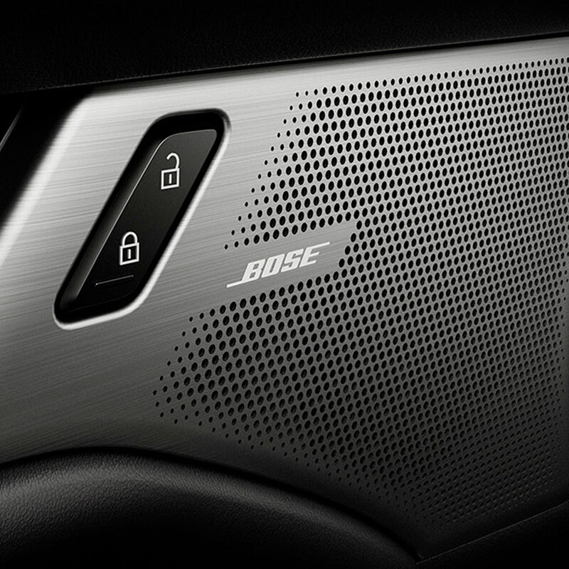
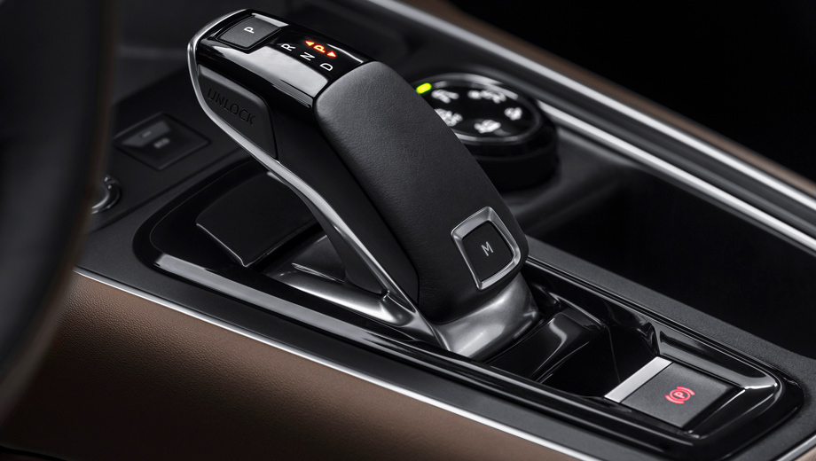

Lo más destacado del Nuevo Mazda
El sistema de audio premium disponible de 12 altavoces de Bose® considera cuidadosamente tanto las características humanas como del diseño interior del auto. Desde woofers montados en los paneles laterales frontales hasta el posicionamiento de altavoces de alta gama, los ingenieros estudiaron cada detalle sobre cómo interactúa el sonido con el ambiente circundante, para así lograr una experiencia auditiva única y completamente novedosa para Mazda.
Con el conjunto de características de seguridad de i-Activsense®, sofisticadas innovaciones de seguridad te alertan ante los peligros para ayudarte a evitar choques o minimizar su impacto. Estas características te ayudan a mejorar la visibilidad y el reconocimiento de la carretera, y te ayudan a monitorear las condiciones del tráfico.
Nuestros ingenieros trabajan incansablemente para crear vehículos más atractivos y seguros en cada viaje. Durante todos estos años hemos logrado este desafío con distinciones, por ejemplo, MAZDA CX-5 ha obtenido la calificación de seguridad más alta en Safety Top Pick Plus 2017 por el IIHS desde el 2012
Estas tecnologías protegen a las personas y reducen el daño en el caso de una colisión. Incluyen el cuerpo rígido SKYACTIV® con una estructura de anillo, cinturón de seguridad con pretensor y limitador de carga, pedal de freno antiintrusión, SRS Airbag Systems y más.